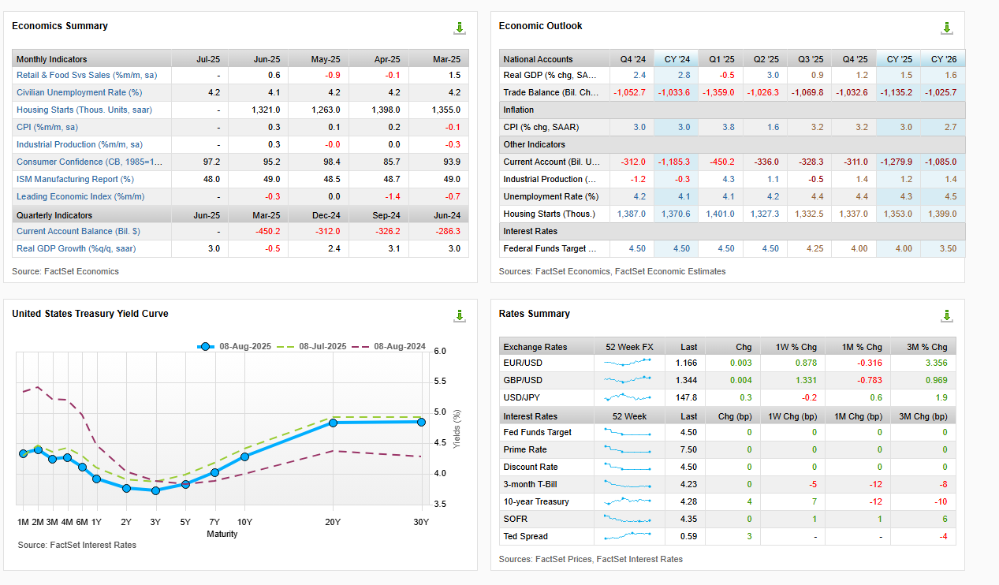
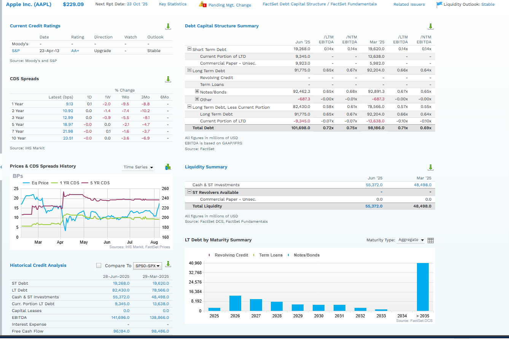
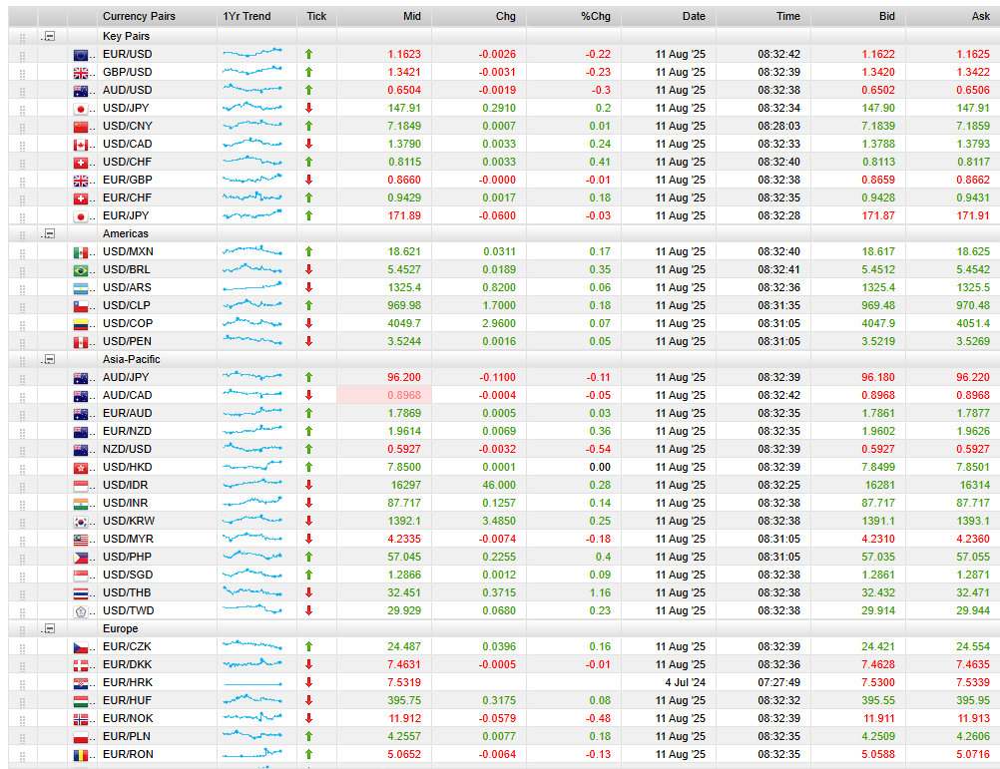
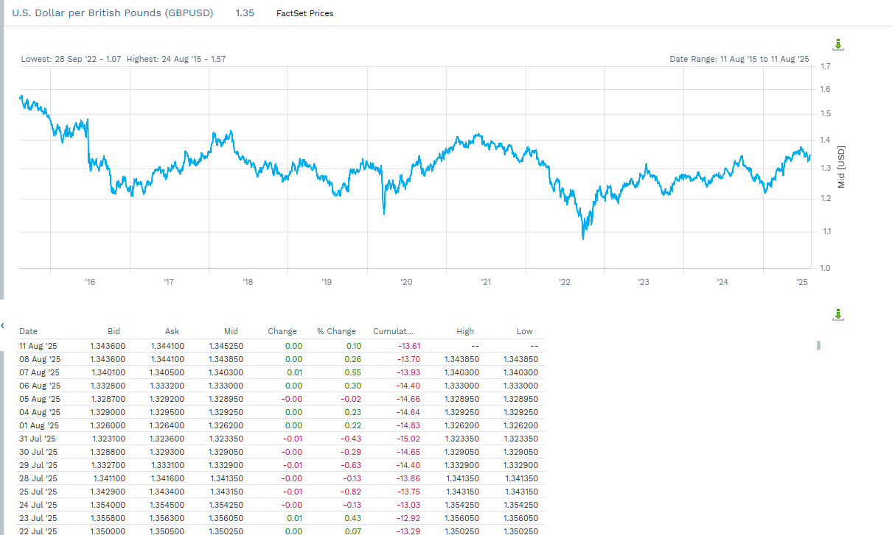

Price the cost of borrowing
Bond yields reflect time, inflation, and creditworthiness. The yield curve shows how borrowing costs change across maturities.
Fixed income and FX markets
Connect interest rates, bond yields, and currency values to market evidence.
The shared economic engine
Bond yields reflect time, inflation, and creditworthiness. The yield curve shows how borrowing costs change across maturities.
Exchange rates respond to inflation, growth, trade, and interest-rate differences across countries.
The root of the bond market
The amount borrowed and repaid at maturity.
The contractual interest paid to the lender.
The date when principal is due.
The return investors use to compare bonds.
The required return on lending
Longer lending periods expose investors to more uncertainty and changing rates.
Higher expected inflation reduces the real value of fixed coupon and principal payments.
Weaker borrower creditworthiness requires a higher yield to compensate for default risk.
Policy enters the pricing process
Raise short-term borrowing costs and can slow demand.
Influence the longer end of the yield curve.
Can move yields before the policy rate actually changes.
Borrowing costs across maturities
The central bank has the strongest direct influence.
Markets price the likely path of policy rates.
Growth and inflation expectations become more important.
Inflation uncertainty and duration risk shape yields.
You interpret the signal
Often consistent with stronger growth, rising inflation expectations, or both.
Can signal uncertainty about the next phase of the economic cycle.
Often reflects restrictive policy and expectations of slower future growth.
Country Market Analysis

Debt Capital Structure

The same rates cross borders
Move from domestic borrowing costs to relative inflation, growth, rates, and investor demand.
Foreign exchange = currency = FX
Exchange currencies for near-immediate settlement.
Combine spot and forward transactions to move currency exposure across time.
Exchange rates connect trade, investment, and confidence in central banks and governments.
Relative conditions drive relative value
Higher expected inflation can weaken demand for a currency when its future purchasing power falls.
Stronger expected growth can attract investment into a country’s equity and bond markets.
Higher yields may attract currency inflows when inflation and credit risk remain credible.
Read the base and terms currencies carefully
One U.S. dollar buys 138.80 Japanese yen.
One U.S. dollar buys 17.5515 Mexican pesos.
EUR, GBP, AUD, and NZD are often quoted with the non-USD currency as the base.
Three policy channels
Use foreign reserves to increase or decrease demand in the FX market.
Try to move expectations without immediately spending reserves; credibility is essential.
Alter policy rates to influence capital flows and demand for the currency.
The objective depends on the economy
Domestic goods and services become cheaper for foreign buyers, which can support export competitiveness—but imports become more expensive.
Foreign goods and services cost less in domestic-currency terms, which can help importers and consumers—but exporters face tougher pricing.
Market Snapshot

Move from description to explanation

Identify the trend, range, and major turning points.
Test inflation, growth, rate, and policy evidence around those dates.
State which driver has the strongest support and what remains uncertain.
Historical FactSet market values captured August 2025.
What success looks like
Bond yields to time, inflation, and credit risk
Exchange rates to relative inflation, growth, and interest rates
FactSet market evidence to a clear economic explanation
Use the left and right arrow keys to move between slides. Press F for fullscreen.